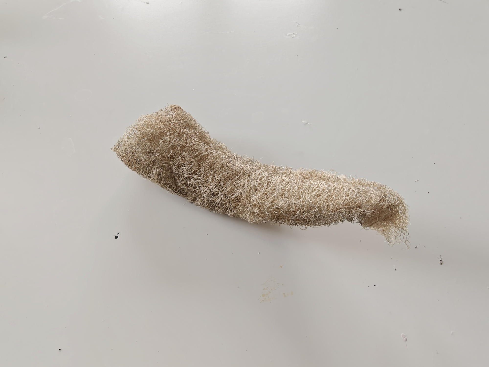
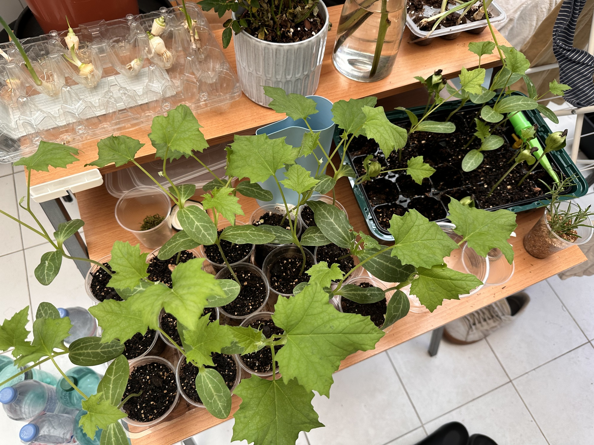
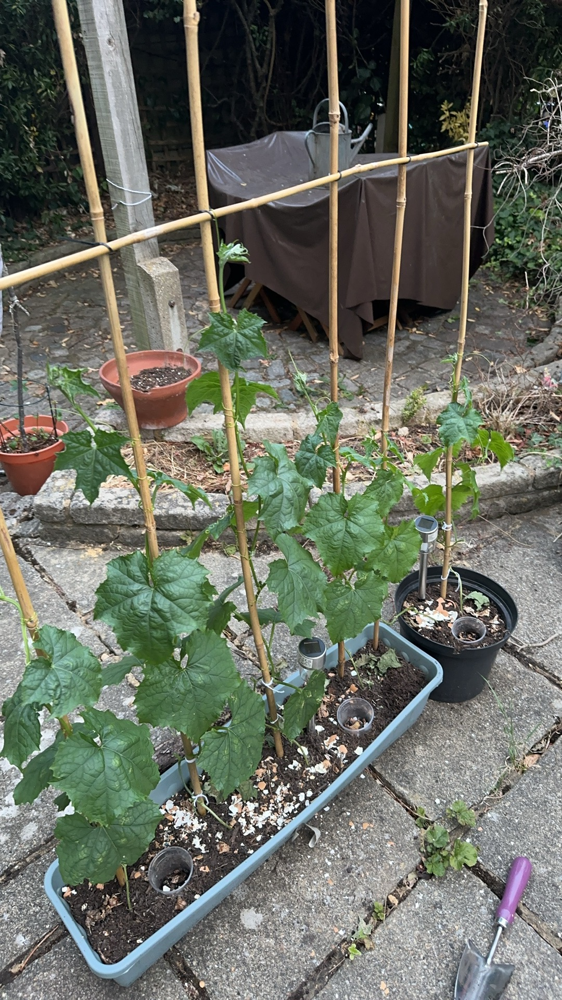

Living Practice · 01
From Seed
to Sponge
Growing my own material — a full cycle of care.
From a single seed in a London backyard to a fibrous, biodegradable sponge — a full cycle of growing my own material, where care became the design method.

Growing the material
In a small London backyard, I planted loofah — luffa aegyptiaca — from seed. I germinated them in recycled plastic cups under the kitchen table, moved them outdoors in spring, built bamboo scaffolding by hand, and added eggshell and kitchen compost to nourish the soil. I watched the tendrils grip, the flowers open and close, the fruit swell.
When the season ended, what remained was not waste — it was a fibrous, biodegradable sponge. A material grown, not manufactured.


Care as a method
Growing something you will eventually use changes your relationship to it. You understand where it comes from, what conditions it needs, what it costs in time and attention. This is the foundation of what I understand as regenerative design: not just zero waste as a system principle, but care as a design method.


